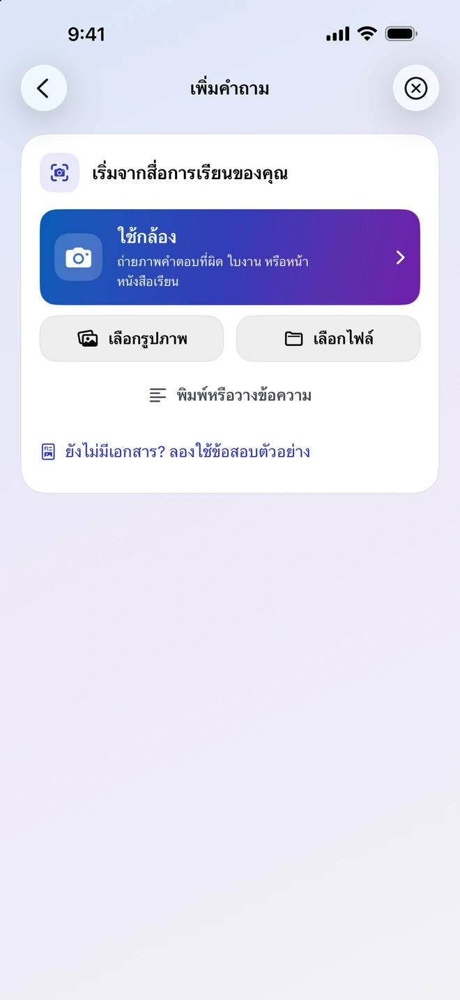
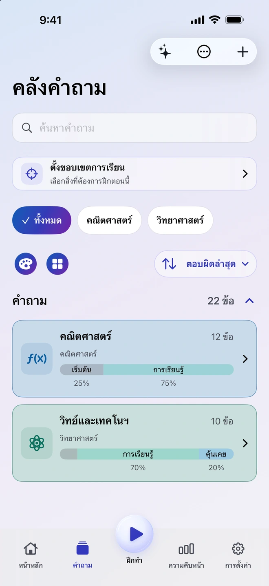
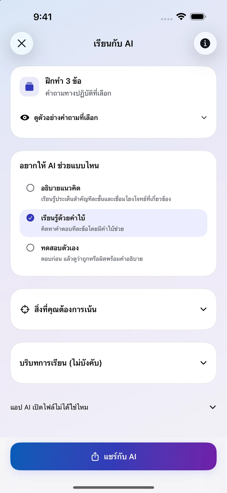
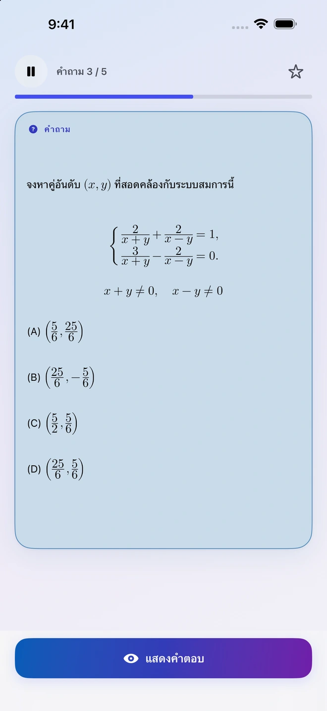
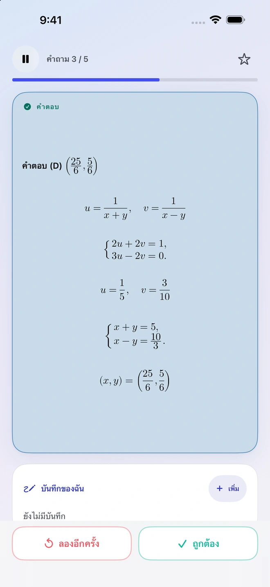
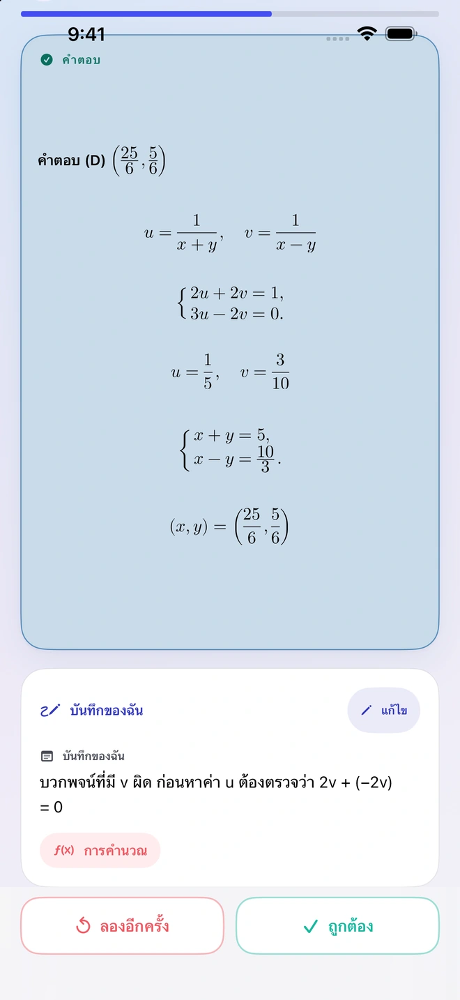
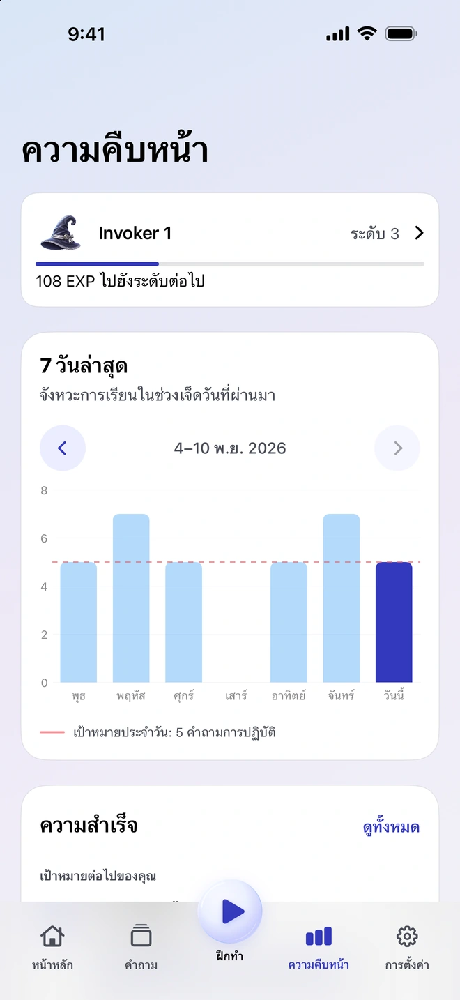

ใช้สื่อการเรียนของคุณสร้างคำถาม
เพิ่มรูปภาพ ไฟล์ PDF เอกสาร หรือโน้ต Quiz Invoker จะเตรียมสื่อการเรียนและคำสั่งสำหรับสร้างคำถามให้คุณแชร์กับแอป AI ภายนอกที่รองรับและคุณเลือกเอง ตรวจสอบผลลัพธ์ที่ได้รับ นำเข้า แล้วเก็บเฉพาะข้อที่อยากฝึกไว้ในคลัง
แอปสำหรับเรียนบน iPhone
เริ่มจากหนังสือเรียนหนึ่งหน้า โน้ตสั้น ๆ หรือข้อที่เคยตอบผิด นำมาใส่ใน Quiz Invoker ตรวจดูว่าต้องการเก็บข้อไหน แล้วใช้คำถามเหล่านั้นในการฝึกครั้งถัดไป
ดูวิธีใช้งาน

เก็บคำถามที่สำคัญกับคุณไว้ แล้วกลับมาลองทำอีกครั้งเมื่อเวลาผ่านไป
เพิ่มรูปภาพ ไฟล์ PDF เอกสาร หรือโน้ต Quiz Invoker จะเตรียมสื่อการเรียนและคำสั่งสำหรับสร้างคำถามให้คุณแชร์กับแอป AI ภายนอกที่รองรับและคุณเลือกเอง ตรวจสอบผลลัพธ์ที่ได้รับ นำเข้า แล้วเก็บเฉพาะข้อที่อยากฝึกไว้ในคลัง
แชร์คำถามที่เลือกกับแอป AI ภายนอกที่ต้องการ ให้แอปนั้นช่วยอธิบายแนวคิด ให้คำใบ้ทีละขั้น หรือทดสอบความเข้าใจของคุณ คุณเป็นคนเลือกว่าจะส่งไฟล์หรือบันทึกใด

ลองทำโจทย์เองก่อน จากนั้นเปิดดูคำตอบและประเมินว่าจำได้แค่ไหน จดว่าติดตรงไหนไว้ เพื่อกลับมาอ่านเมื่อเจอข้อเดิมในครั้งถัดไป


หน้าความคืบหน้าแสดงการฝึกในช่วงเจ็ดวันที่ผ่านมาและเป้าหมายรายวัน บันทึกจะอยู่กับคำถาม คุณจึงกลับมาดูได้ทั้งคำตอบและวิธีคิดในตอนนั้น


จัดระเบียบคำถามและฝึกแบบออฟไลน์ได้โดยไม่ต้องมีบัญชี Quiz Invoker แอปเตรียมไฟล์และคำสั่งบนอุปกรณ์ของคุณ ส่วนเนื้อหาที่ส่งออกไปจะได้รับการประมวลผลในแอป AI ภายนอกที่คุณเลือก